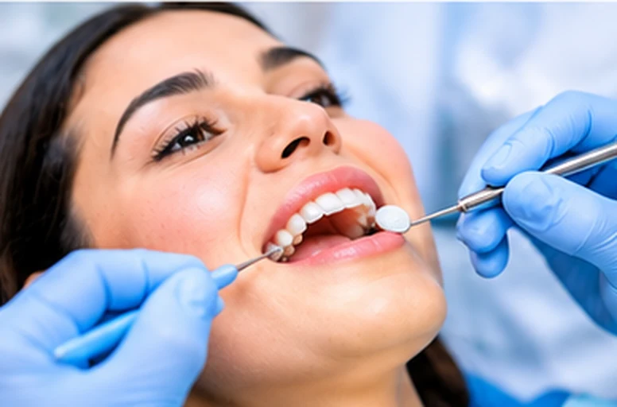

General Dentistry
A general dental visit covers the everyday care your teeth and gums need. The dentist examines your mouth, discusses any concerns and advises on what, if anything, needs treatment.
- Early spotting of cavities and gum problems
- Clear advice on daily oral care
- A single place for most dental concerns